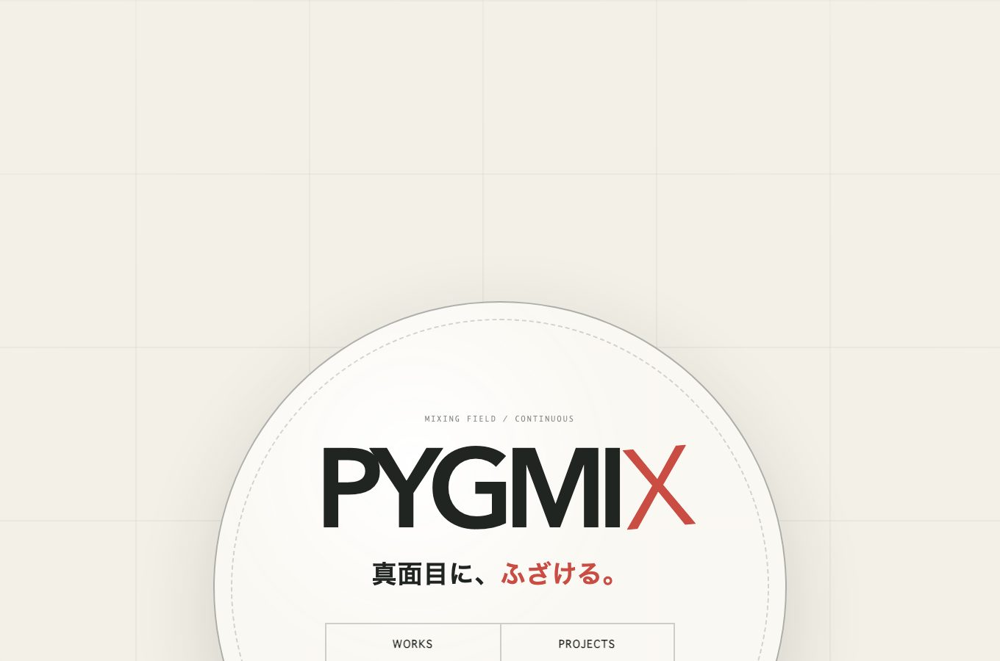
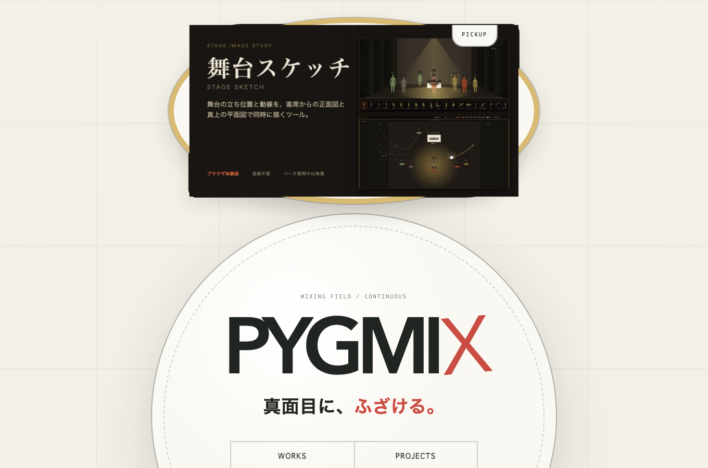
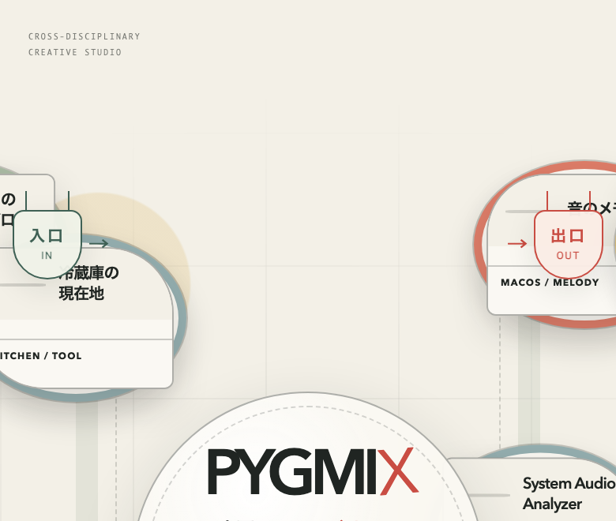
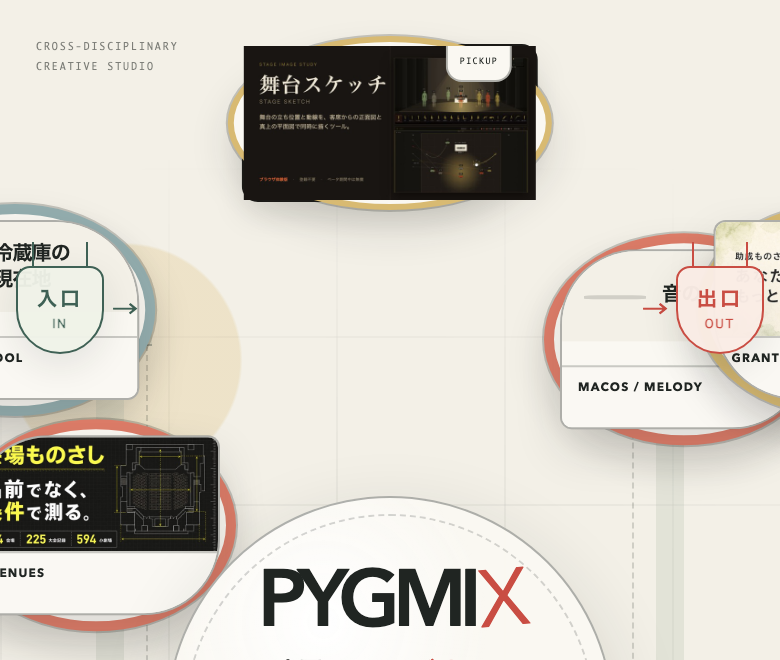
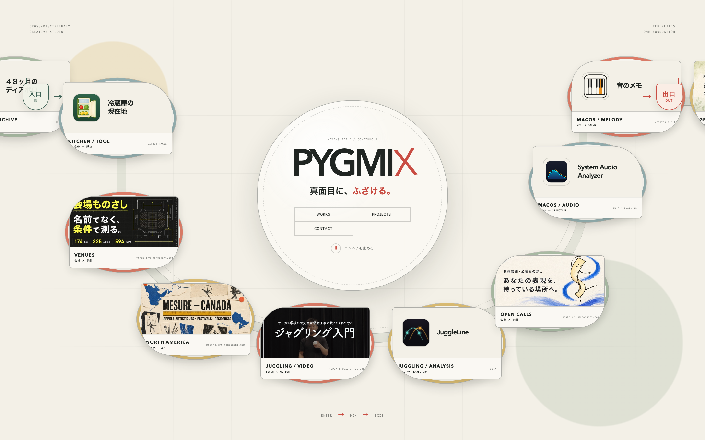
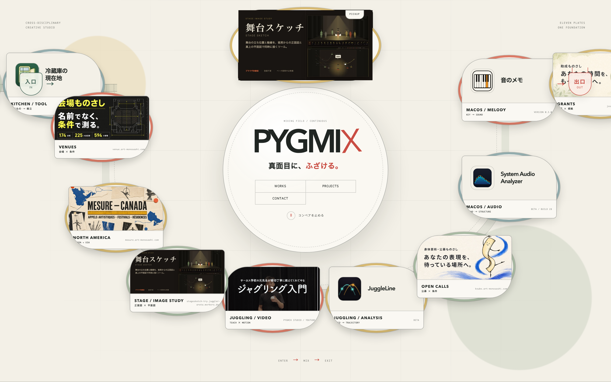
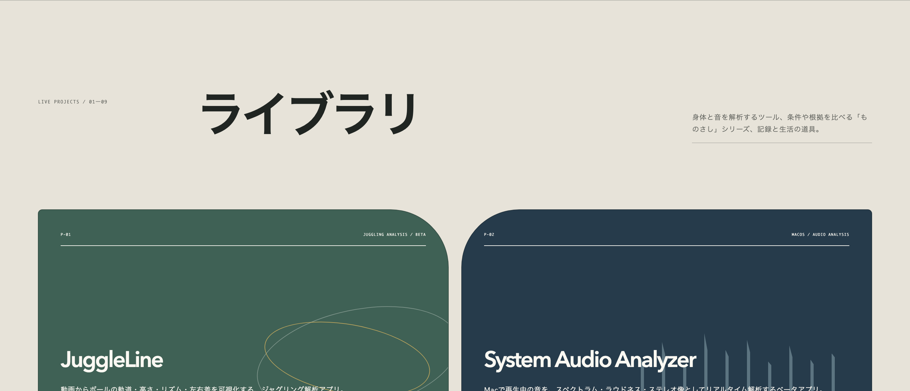
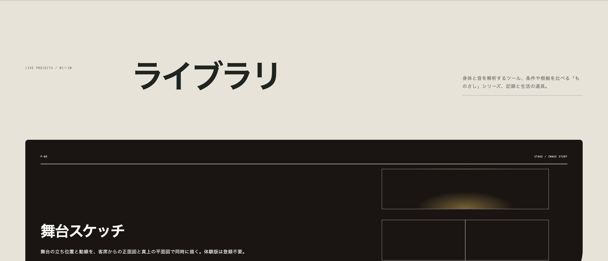
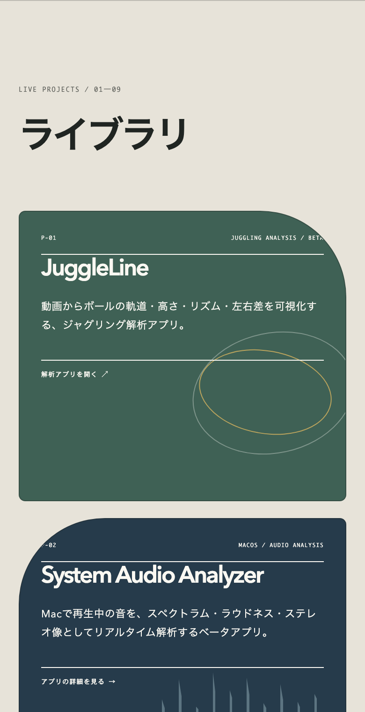
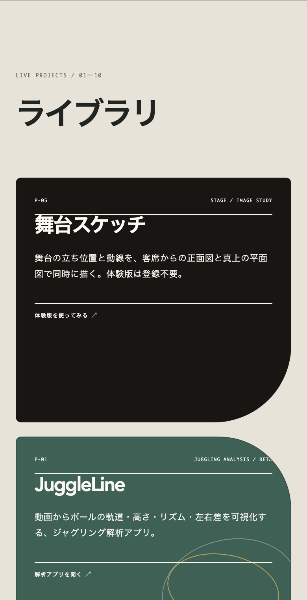

docs/2026-09-06_hero-redesign-brief/index.html を見ること。
このページは、そこへ至る検討過程の記録として残す。
カードは面の画像だけにしました。題も説明も画像の中に入っているので、文字では繰り返しません（右の白い欄は撤去）。PICKUP の札だけ画像の右上へ小さく重ねています。円の外側・真上に置き、円の大きさは元のまま触っていません。
★大きさと置き場所は幅ごとに実測して決めました。画像だけのカードは高さ＝幅×0.525と背が高く、皿（流れているカード）や円とぶつかりやすいためです。1周52秒を通して各幅で「使える下端」を測ると、1440pxは円の上端205pxまで空き、768pxは幅320px以下なら円の上端194pxまで、390pxは幅によらず y=110 まででした。
★大きさは画面の高さにも連動します。円の上の空きは画面の高さで変わるため、50vh から円の位置を引いて空きを求め、画像の比（640×336）から幅を計算しています（上限380px）。1440×900では326px、1440×1080では380pxまで伸びます。
1440×900 / 1440×1080 / 1920×1080 / 1366×768 / 1280 / 1100 / 1000 / 950 / 900 / 860 / 820 / 768 / 600 / 560 / 430 / 390 / 375 / 360 / 320px の19通りで、皿・隅のラベル・中央の円のいずれとも重ならず、画面内に収まることを実測しました。




★置き場所は画面幅で変えています。円のすぐ上を皿（流れているカード）が通るかは幅によって違い、中央帯で皿が来る最上端を実測すると 1440px は y=592（円の上端205pxより下＝円の上はまるごと空き）、768px は y=75、390px は y=110 でした。つまり狭い幅では「円のすぐ上」に皿が来るので、1100px以下ではヒーロー上部の空いている位置へ逃がしています。
1440 / 1100 / 768 / 560 / 430 / 390 / 360px の7幅で、1周52秒を通して皿とも隅のラベルとも重ならないことを実測しました。タップ面は54〜73px（基準44px以上）。
流れているカード（皿）に1枚足しました。面は舞台スケッチのOGカードを他の皿と同じ640×336へ縮めた同梱コピーです。皿が10枚→11枚になったので、右上の表記も TEN PLATES → ELEVEN PLATES に変えています。周回は52秒のままで、11枚を等間隔（4.73秒ずつ）に割り直しました。


右の画像は、舞台スケッチの皿が見える時刻でコンベアを止めて撮っています（左下）。暗い面なので既存の明るい皿の中で目立ちますが、会場ものさしも暗い面なので浮いてはいません。
P-05として全幅カードを追加。地色はリンク先のアプリと同じ舞台の暗色にして、開く前と後をつないでいます。図像は「上＝客席から見た正面図（足元に明かりの溜まり）／下＝真上から見た平面図（舞台の中心線）」です。




スマホでは図像を消しています。狭いカードでは本文と「体験版を使ってみる」の行に必ず重なるためです（実測）。
| 確認したこと | 結果 |
|---|---|
| グリッドの埋まり方 | この一覧は span の合計が16＝4行ちょうどで埋まる設計でした（音のメモが全幅）。最初 span 2 で入れたら System Audio Analyzer が1枚だけ取り残された行ができたため、全幅にして20＝5行ちょうどに戻しています |
| PICKUP の重なり（5幅） | 1440 / 760 / 620 / 560 / 390px すべてで、画面内に収まり隅のラベルともコンベアとも重なりなし |
| タップ面 | PICKUP は46〜48px（基準44px以上） |
| design-lint | 変更前 NG109/WARN11 ／ 変更後 NG113/WARN14。 増えた分は、皿1枚ぶんの既存の指摘です。皿の説明文（分類・掛け合わせ・出どころ）の行送りと、出どころの文字色のコントラストは、既存11皿すべてが同じ指摘を受けています（ KITCHEN / TOOL OPEN CALLS なども各2件）。新種の問題は増えていません。PICKUPのカードは、最初 PICKUP の札のコントラストが 4.47:1（基準4.5:1）、題の行送りが1.3（基準1.5〜2.0）で4件の指摘が出たので、公開前に直しました（札の不透明度を0.62→0.66＝5.08:1、行送りを1.5へ）。いまカード由来の指摘は0件です。WARNは「動いている要素どうしが重なって判定できない」もので、 入口 出口 など既存の要素だけです（本番10枚版も14件）。 |
| テスト | npm test 7件全通過（PICKUPの存在・行き先・カード10枚・件数表記を検査に追加） |
design-lint の109件は、このページに元からある指摘です（コントラスト52・行送り54・タップ対象14）。今回の範囲外なので触っていません。直すかどうかは別途ご相談させてください。
TEN PLATES の表記を変えたくない場合）